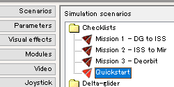
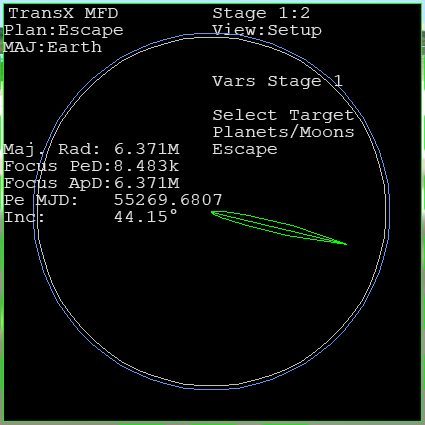
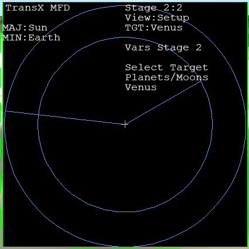
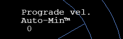
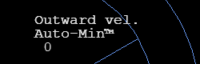
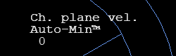
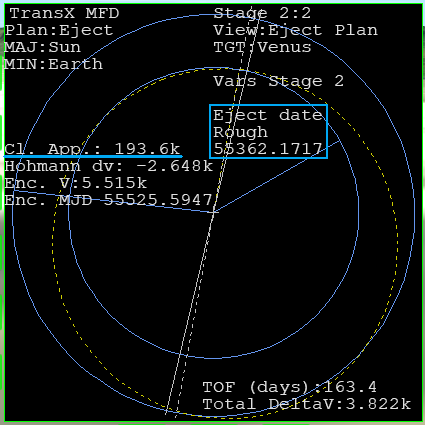
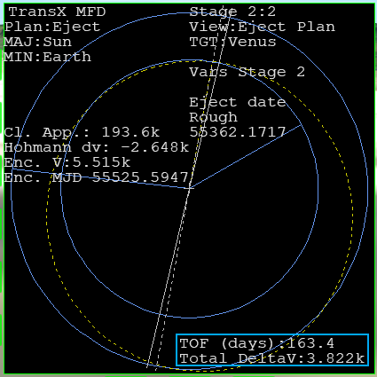
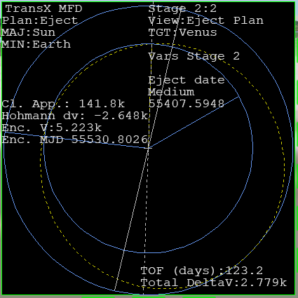

Part18 金星へのPlanを作る
惑星間遷移軌道のPlanを作成します。
使用するシナリオ
ChecklistsフォルダのQuickstartを選択。

ダブルクリックでゲームを開始する。
ステージの作成
左右両方のMFDでTransXを開く。
Select Targetで、++を2回クリック。
Escapeを選択する。

FWDをクリック。
Stage 2にする。
Select Targetを選択しておく。
++を何度かクリック。
Venusを選択する。

Auto-Min機能
Auto-Min機能を使うと、惑星間軌道のPlanを自動で作成できる。
Auto-Minを有効にする
VWをクリック。
View:Eject Planに切り替える。
Prograde vel.を選択する。
-AJを3回クリック。
Auto-Minにする。

VARで要素を切り替える。
OutwardとCh. planeを選択。
両方ともAuto-Minにする。
 
打ち上げ予定日を決定する
-VRを何度かクリック。
Eject dateを選択する。
-AJをクリック。
感度をRoughにする。
++を何回かクリック。
Cl. App.をできるだけ小さくする。

G>M>kの順番で小さくなる。
Gがギガメートル、Mがメガメートル、kがキロメートルを意味する。
| Eject date | 惑星の重力圏を出る日時 |
| Cl. App. | 最接近時の距離 |
TOFとTotal Delta V
TOF (days)とTotal Delta Vを確認する。
View:Eject Planの右下に表示されている。

| TOF (days) | Time of flight | 移動に必要な日数 |
| Total DeltaV | 必要なDelta Vの合計 | |
Eject dateを細かく操作する。
上の2つをできるだけ小さくする。
ADJを3回クリック。
感度をFineに切り替える。
++or--を長押しクリック。
2つの数字を小さくする。
Total DeltaVは3k(3000)が目安。

使用しているアルゴリズムの問題で、数字は激しく変動する。
長押しして、数字が小さくなったら止める。
数字が小さくならないときは、Resetするか、Roughにして次のタイミングを探す。
関連項目
- 打ち上げ前にPlan（計画）を作るのはなぜ？
- 惑星間航行の基本（動画）